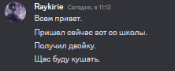
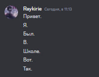
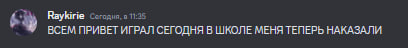
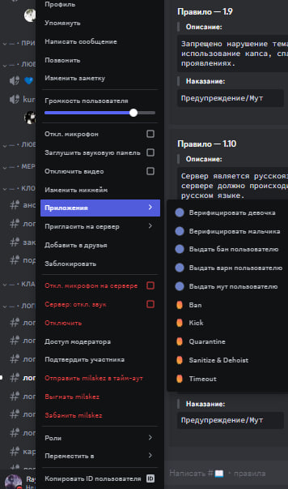

Баны за 1.1 НЕ ДАЮТСЯ если человек просит скинуть ему денег,
но если он кидает свой номер или номер карты - делаетете ему
устное предупрежедние, при повторе варн.
1.2 Выдаете бан на твинк и варн на основу если:
Отписываем в локалу в таком формате:
1.3 Личная информация это:
ФИО/место проживания/работы/учебы/дата рождения/номер телефона
или любая другая личная информация. Человек нарушает 1.3 при условии, когда ему
не было дано разрешение на распростанение.
1.4 Если человек стримит порно, можете выдать варн. Если
расчлененка/детская порнография/свастика/зоофиля - бан. Если показывают
женскую грудь или любые гениталии - это 1.4. Показывают такой контент IRL - сразу бан,
в остальных случаях варн. Любая пропаганда терроризма, наркотиков - варн,
при повторном нарушении - бан. Если на вебке/демке оскорбительные надписи или подобное,
сначала предупреждаем, потом варним. Шок контент, сцены насилия, надругательства
над несовершеннолетними/животными, тошнотворный контент - бан.
1.6 Профили: говорите/пишите в лс предупрежедние, ждете 10 минут, если не меняет - бан.
За названия личных комнат, нелинкабельные ники - варн.
1.7 Баним если человек говорит, что ему меньше 13 лет, первый раз предупреждаем не шутить так,
при повторе - бан. Человек настойчиво призывает покинуть сервер, кидает краш гифки в чат - бан.
За краш в гифку в личные сообщения выдаете варн, при активном варне по 1.7 выдаете бан
1.10 Если юзер не понимает русский язык вообще - баним. Если человек просто приворяется,
мы его предупреждаем о том, что нужно общаться на русском языке, при повторе - мут.
Не считаем это за лесенку:
Считаем это за лесенку:
Намеренное написание слов заглавными буквами для привлечения внимания.
Пример:
Множество сообщений схожие по смыслу за маленький промежуток времени.
/warn - выдать варн
/unwarn - снять варн
/mute - выдать мут
/unmute - снять мут
/ban - выдать бан
/unban - снять бан
/history - посмотреть историю нарушений
/moderator-top - посмотреть топ по баллам/репортам
Нажимаете на пользователя правой кнокой мыши, наводитесь на вкладку "Приложения", где можно выбрать наказание.
